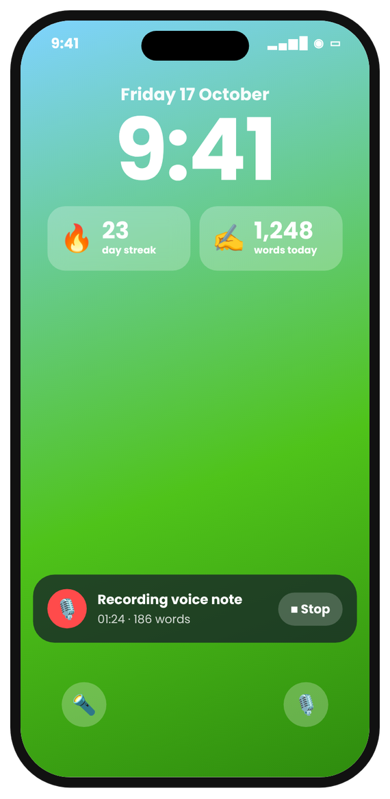

Voice notes
Talk. It turns into text.
Record a thought, a to-do or a whole journal entry. Inkstreak turns it into text on your iPhone and files it in a folder.
Coming to the App Store7 days free, then $7.99/month or $49.99/year.

One tap
Start without hunting for the app
Put a Voice note button on your Lock Screen, in Control Center or on the Action Button — or make your own Siri phrase.
- “Hey Siri, quick note”
- Lock the phone mid-sentence — it keeps going
- Stop from the Lock Screen

Private
Transcribed on your iPhone
Speech is turned into text on the device. Audio isn't kept.
- Saved into your folder
- Spoken words count toward your streak

Questions
How long can a voice note be?
Up to an hour. It saves automatically when you stop.
Does it work offline?
Yes — speech is turned into text on your iPhone.
Write a little every day.
7 days free, then $7.99/month or $49.99/year. No account. No ads.
Launching on the App Store very soon. Follow along: get an email when it's out.